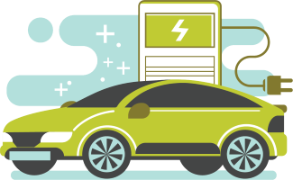
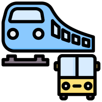
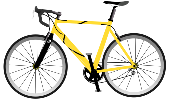
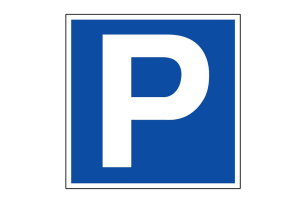

PAMETNI GRADOVI
Tehnologije koje oblikuju našu budućnost
| Početna | Tehnologije | Održivost | Transport | Kontakt |

Transport u pametnim gradovima koristi tehnologiju za povećanje efikasnosti, smanjenje zagađenja i olakšavanje kretanja građana. Električna vozila, inteligentni prometni sistemi i održiva infrastruktura postaju ključni elementi modernih gradova.
Ključne karakteristike pametnog transporta:
- Električna vozila:
- Električna vozila predstavljaju ključni element u smanjenju emisije štetnih gasova u atmosferu.
U gradovima gdje se koristi električni transport, smanjuje se zagađenje, a javni prevoz postaje tiši i energetski efikasniji.
Ove vrste vozila također koriste obnovljive izvore energije, čime doprinosimo smanjenju globalnih emisija ugljen-dioksida.
Gradovi koji implementiraju električna vozila stvaraju održivu infrastrukturu za budućnost i podstiču zelenu ekonomiju.

- Javni prevoz na zahtjev:
- Javni prevoz na zahtjev omogućava građanima da naruče vozilo prema sopstvenim potrebama, čime se smanjuje broj nepopunjenih vozila i gužve u saobraćaju.
Ovaj sistem koristi aplikacije za mobilne telefone i sisteme za upravljanje flotama vozila kako bi građanima omogućio fleksibilnost i brz pristup transportu.
Time se smanjuje vrijeme čekanja i poboljšava dostupnost prevoza, naročito u manje razvijenim dijelovima grada gdje je javni prevoz povremeno nedostupan.

- Infrastruktura za bicikliste:
- U pametnim gradovima infrastruktura za bicikliste uključuje sigurnosne biciklističke staze, javne bicikle na iznajmljivanje i pametne stanice za parkiranje bicikala.
Promocija biciklizma kao alternativnog sredstva prevoza smanjuje saobraćajne gužve, zagađenje i doprinosi zdravlju građana.
Ove vrste sistema omogućavaju ljudima da brzo i jeftino dođu do destinacija, smanjujući pritom opterećenje na druge oblike prevoza.

- Pametni parking sistemi:
- Pametni parking sistemi koriste senzore i aplikacije za praćenje slobodnih parking mjesta u stvarnom vremenu.
Ovaj sistem omogućava vozačima da brzo pronađu parking, smanjujući vrijeme provedeno u potrazi za mjestom i time smanjujući saobraćajne gužve.
Osim toga, pametni parking doprinosi većoj efikasnosti u korištenju urbanog prostora, jer se smanjuje potreba za velikim parking prostorima, što ostavlja više mjesta za zelene površine i javne prostore.

- Pametni prometni sistemi:
- Pametni prometni sistemi koriste naprednu tehnologiju i senzore kako bi pratili i upravljali saobraćajem u realnom vremenu. Korišćenje ovih sistema omogućava optimizaciju semafora, smanjenje saobraćajnih gužvi i bolju distribuciju saobraćajnih tokova, što vodi ka smanjenju zagađenja i povećanju efikasnosti transporta. Također, pametni sistemi mogu detektovati nesreće i preusmjeriti saobraćaj kako bi se izbjegle dodatne gužve, što povećava sigurnost i efikasnost saobraćaja u gradovima.